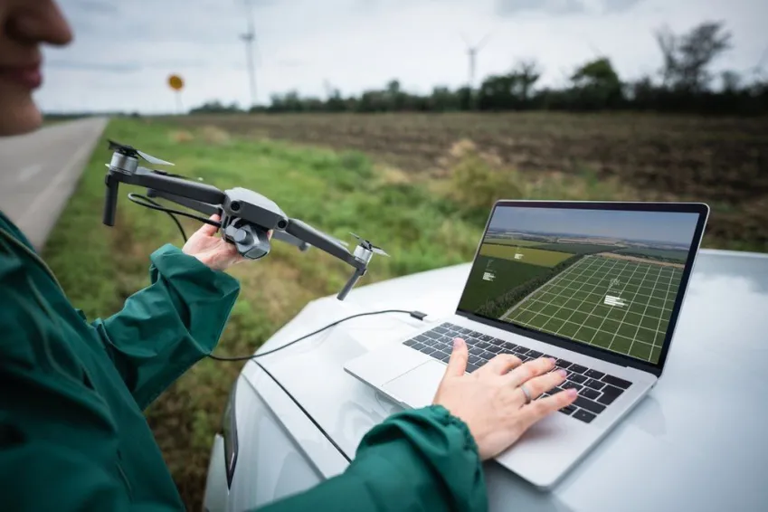

Novas tecnologias: tendências e o que esperar para o futuro
As novas tecnologias têm transformado a forma como trabalhamos, aprendemos, nos comunicamos e fazemos negócios; conheça algumas delas
Toda vez que uma nova tecnologia chega, ela traz com ela mudanças e impactos na sociedade como um todo. Elas transformam a forma como trabalhamos, aprendemos, nos comunicamos e fazemos negócios.
Diferente da evolução humana, a evolução das máquinas anda em passos muito mais rápidos e, naturalmente, as pessoas precisam aprender a lidar com isso.
Realidade virtual, Big Data e drones são alguns exemplos de novas tecnologias que já fazem parte do cotidiano.
Qual a importância das novas tecnologias?
Tecnologias novas são extremamente importantes porque elas têm o potencial de melhorar significativamente a qualidade de vida das pessoas em muitas áreas diferentes — a depender de como são usadas.
Abaixo estão alguns dos principais benefícios que as novas tecnologias podem trazer:
melhoria da eficiência: as novas tecnologias mundiais podem tornar muitas atividades mais eficientes, reduzindo o tempo necessário para executar tarefas e automatizando muitos processos. Isso pode levar a uma maior produtividade e a uma redução de custos;
democratização do conhecimento: uma nova tecnologia também pode democratizar o conhecimento, permitindo que pessoas de diferentes partes do mundo tenham acesso a informações valiosas e aprendam novos assuntos. Isso pode levar a uma maior igualdade de oportunidades educacionais e uma melhor qualidade de vida para as pessoas;
melhoria da comunicação: tecnologias novas, quando se pensa em toda a era da internet, por exemplo, podem melhorar a comunicação entre as pessoas, permitindo que elas se conectem rapidamente com quem não está próximo fisicamente. Isso pode levar a uma maior colaboração e troca de ideias, bem como uma melhor compreensão entre as culturas.
Fonte:
https://www.cnnbrasil.com.br/tecnologia/novas-tecnologias/#goog_rewarded
DRONES
Os drones são veículos aéreos não tripulados (UAVs) que podem ser controlados remotamente ou programados para realizar tarefas específicas.
Eles têm sido amplamente utilizados em setores como agricultura, construção, entrega, fotografia e videografia.
Os drones permitem uma inspeção mais segura e eficiente de estruturas, a entrega rápida de produtos e serviços, bem como o registro de imagens e vídeos de locais de difícil acesso.
Fonte:
https://www.cnnbrasil.com.br/tecnologia/novas-tecnologias/#goog_rewarded
Tecnologia 5G

A tecnologia 5G é importante porque oferece velocidades de download/upload significativamente maiores, menor latência (tempo de resposta) e a capacidade de conectar um número massivo de dispositivos simultaneamente. Isso impulsiona a Indústria 4.0 (com automação e robótica), a Internet das Coisas (IoT) (com dispositivos conectados), e avança em setores como saúde (telemedicina), educação (aulas imersivas), cidades inteligentes (gerenciamento de tráfego e recursos) e lazer (experiências mais ricas).
A tecnologia 5G é a próxima geração de redes móveis, que promete uma conexão mais rápida e estável.
Ela permite que mais dispositivos sejam conectados simultaneamente e oferece maior capacidade de transferência de dados, abrindo caminho para novas tecnologias como carros autônomos, realidade virtual e IoT.
A tecnologia 5G tem sido implementada em todo o mundo, oferecendo uma melhoria significativa na experiência do usuário em serviços de streaming, jogos online e outras aplicações de alta demanda de dados.
Fonte:
https://delgrande.com.br/blog/tecnologia-5g-como-funciona-e-impacto-na-sociedade/#:~:text=Voc%C3%AA%20pode%20dar%20adeus%20%C3%A0quele,exponencialmente%20nossa%20qualidade%20de%20vida.